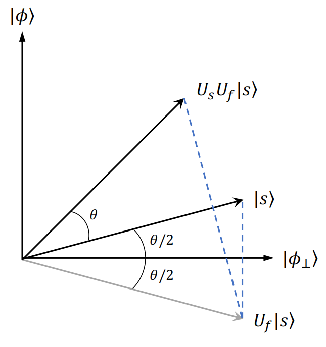

函数计算
输入 x=(xn−1,xn−2,…,x0) 储存在 n 比特寄存器 ∣x⟩ 中，输出 f(x) 储存在 m 比特寄存器 ∣y⟩ 中，且 ∣y⟩ 的初值为 ∣0⟩。一个幺正算符 Uf 可以执行以下计算：
Uf∣x⟩∣y⟩=∣x⟩∣y⊕f(x)⟩
其中 ⊕ 表示按位模 2 加法。量子计算的并行性可以明显地看出：
Ufx=0∑2n−1cx∣x⟩∣y⟩=x=0∑2n−1cx∣x⟩∣y⊕f(x)⟩
Deutsch-Jozsa 问题
单比特情况
考虑一个“黑盒”或者“预言机” Uf，它实现了一个函数 f:{0,1}→{0,1}。这个函数只可能是两种类型之一：常数函数（对所有输入都返回相同的输出）或者平衡函数（对一半的输入返回 0，对另一半的输入返回 1）。那么我们需要多少次查询 Uf 才能确定 f 的类型？经典算法在最坏情况下需要两次查询，而量子算法只需要一次查询。
n比特情况
Deutsch-Jozsa 问题是一个通用的 Deutsch 问题。函数 f:{0,1}n→{0,1} 要么是常数函数，要么是平衡函数。经典算法在最坏情况下需要 2n−1+1 次查询，而量子算法只需要一次查询就能确定 f(x) 的类型。
Grover 搜索算法
Grover 算法是一种量子算法，能够以高概率从 N 个元素的无序数据库中找到一个特定的输入，且只需要 O(N) 次查询。相比之下，经典算法在最坏情况下需要 O(N) 次查询。
在量子语言下，Grover 算法提供了一种从均匀叠加态中找到目标态 ∣ϕ⟩ 的方法（N≫1）：
∣s⟩=N1i=0∑N−1∣x⟩⇒∣ϕ⟩
Grover 算法还有一个更准确的描述：函数逆运算。假设有一个函数能够在量子计算机上计算，Grover 算法允许我们在给定 y 的情况下找到 x，使得 f(x)=y。
类似于 Deutsch-Jozsa 问题，我们先设定一个查询函数：
f(x)={10 if x=∣ϕ⟩ if x=∣ϕ⟩
step 1：准备初始态 ∣ψ1⟩=∣0⟩⊗n∣1⟩，第一个寄存其中含有 n=log2N 个比特，第二个寄存器含有 1 个比特。
step 2：对两个寄存器分别施加 Hadamard 变换，得到均匀叠加态：
∣ψ2⟩=2n−11i=0∑2n−1∣x⟩21(∣0⟩−∣1⟩)
step 3：执行以下 “Grover iteration” 迭代 r(N) 次，其中函数 r(N) 的渐进行为为 O(N)。Grover 迭代由两个幺正算符 Uf 和 Us 组成：
∣ψ3⟩=(UsUf)r(N)∣ψ2⟩
其中 Uf 是查询函数对应的幺正算符 Uf∣x⟩∣y⟩=∣x⟩∣y⊕f(x)⟩，因此
Uf∣x⟩21(∣0⟩−∣1⟩)=(−1)f(x)∣x⟩21(∣0⟩−∣1⟩)
若我门只关心第一个寄存器的状态，可以忽略第二个寄存器，查询结果可由 ∣x⟩ 的相位判定
Uf∣x⟩={−∣x⟩∣x⟩ if x=∣ϕ⟩ if x=∣ϕ⟩
Uf 可以等价地写为
Uf=1−2∣ϕ⟩⟨ϕ∣
Us 同样作用在第一个寄存器上，定义为
Us=−H⊗n(1−2∣0⟩⟨0∣)H⊗n=2∣s⟩⟨s∣−1
其中 ∣s⟩=H⊗n∣0⟩⊗n=2n1∑i=02n−1∣x⟩ 是均匀叠加态。态 ∣s⟩ 可以被分解为两部分，一部分是目标态 ∣ϕ⟩，另一部分是所有非叠加而产生的态 ∣ϕ⊥⟩=2n−11∑x=ϕ∣x⟩，且 ⟨ϕ∣ϕ⊥⟩=0。因此
∣s⟩=cos2θ∣ϕ⟩+sin2θ∣ϕ⊥⟩
其中 cos2θ=2n1，sin2θ=2n2n−1。在基 {∣ϕ⊥⟩,∣ϕ⟩} 下，算符 Uf 和 Us 的矩阵表示分别为
Uf=1−2∣ϕ⟩⟨ϕ∣=(100−1)
Us=2∣s⟩⟨s∣−1=(cosθsinθsinθ−cosθ)
因此 Grover 迭代 G=UsUf 的矩阵表示为
G=UsUf=(cosθsinθ−sinθcosθ)
因此，Grover 迭代相当于在 {∣ϕ⊥⟩,∣ϕ⟩} 基下绕原点逆时针旋转 θ 角度。∣ψ3⟩ 可以表示为
∣ψ3⟩=(cosθsinθ−sinθcosθ)r(N)∣ψ2⟩=(cos(rθ)sin(rθ)−sin(rθ)cos(rθ))∣ψ2⟩=[cos(rθ+2θ)∣ϕ⊥⟩+sin(rθ+2θ)∣ϕ⟩]21(∣0⟩−∣1⟩)
那么第一个寄存器的态为
ψ3(1)⟩=cos(rθ+2θ)∣ϕ⊥⟩+sin(rθ+2θ)∣ϕ⟩
因为 N=2n≫1,2θ≈N1，所以当
rθ≈2π⇒r≈4πN
得到
ψ3(1)⟩≈∣ϕ⟩
step 4：测量第一个寄存器，我们将以高概率得到目标态 ∣ϕ⟩。
Grover 算法的几何可视化：
下图是由 ∣ϕ⊥⟩ 和 ∣ϕ⟩ 张成的二维空间的几何表示。初始态 ∣s⟩ 位于 ∣ϕ⊥⟩ 和 ∣ϕ⟩ 之间，Grover 迭代 G 相当于绕原点逆时针旋转 θ 角度。经过 r 次迭代后，态被旋转到接近 ∣ϕ⟩ 的位置，从而实现了对目标态的高概率测量。

算符 Uf 是一个与 ∣ϕ⟩ 垂直平面上的反射，算符 Us 是一个通过 ∣s⟩ 的反射。每一次 Grover 迭代 G=UsUf 都相当于先绕 ∣ϕ⊥⟩ 反射，再绕 ∣s⟩ 反射，